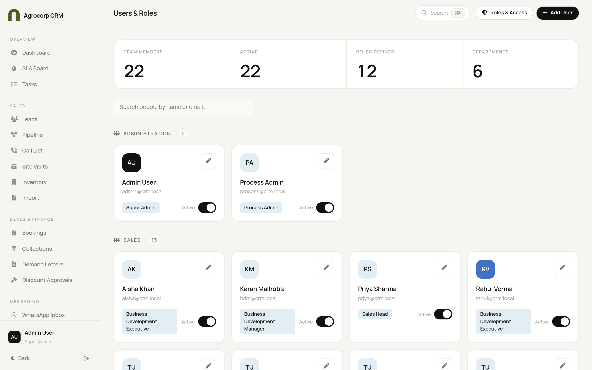
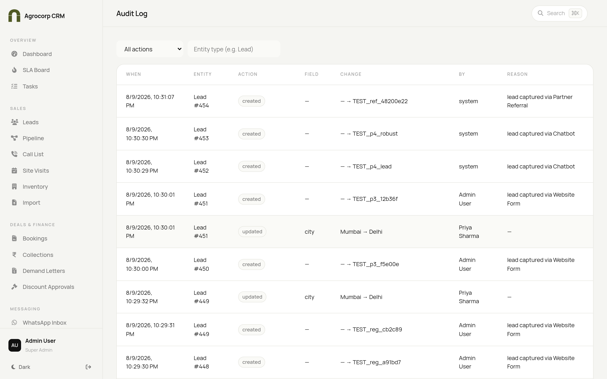

Your step-by-step guide to setting up and running Agrocorp CRM — company setup, users, roles, integrations and system health.
Super AdminProcess Admin
User Manual · If you get stuck, find your task in the contents and follow the numbered steps.
Agrocorp CRM
Admin Playbook
Who this guide is for
The two administration roles that keep the whole CRM running.
Role
What you do
What only you can do
Super Admin
Owns the entire system
Everything, incl. "Preview Roles" and locking the Super Admin role
Process Admin
Runs day-to-day setup
Users, projects, automations, integrations (cannot override the Super Admin lock)
Difference in one line: Super Admin can do everything; Process Admin does everyday setup and configuration but a few owner-only controls stay with the Super Admin.
Your home screen
After you log in you land on the Dashboard. The left menu is grouped into Overview, Sales, Deals & Finance, Messaging, Automation & Setup, Partners and Administration (the section you'll use most).
Admin dashboard — setup progress banner on top, live pipeline numbers below.
Tip: Press Ctrl + K (Windows) or Cmd + K (Mac) anywhere to search a lead or jump to any page instantly.
Logging in for the first time
Open the CRM link in your browser (Chrome or Edge recommended).
On the sign-in screen, type your email in the Email box.
Type your password in the Password box.
Click the black Sign in button.
If it's your very first login, the system asks you to set a new password — type it twice and confirm.
You now land on the Dashboard.
TASK 1 — Complete the first-time company setup
The very first Admin is guided through a short wizard. The side menu stays hidden while the wizard runs so you can focus; it reappears when you finish or skip to the dashboard.
1. Set up your profile
Confirm your name and phone number.
Pick an avatar colour (optional).
Click Continue / Next.
2. Set up your first project
Enter the project name (e.g. "Green Valley Plots").
Enter the city and zone/locality.
Choose the unit type (Plot, Apartment, Villa…).
Enter the price range if asked.
Click Save / Next.
3. Map your department users
Add each team member's name, email (their login ID) and phone number (their first-time password).
Pick their role from the list (Sales Head, BDE, Accounts Head…).
Click Add user and repeat for everyone.
4. Upload inventory
Add the phases and the plots/units for your project.
Mark each unit's status (Available / Held / Booked / Sold).
5. Assign a Process Admin
Choose a trusted team member to help run daily setup.
Click Finish — the full menu now appears.
Need to redo the demo? On the dashboard, the setup banner has a Restart setup button that resets the wizard.
TASK 2 — Add a new user

Administration → Users & Roles — your team directory grouped by department.
In the left menu, open Administration → Users & Roles.
Click the Add user button (top right).
Type the person's full name.
Type their email — this becomes their login ID, so type it carefully.
Type their phone number — this becomes their temporary password for the first login.
Pick their role from the dropdown (this decides what they can see and do).
Click Save.
Tell the person their email and that their first password is their phone number.
They will be forced to set a new password the first time they log in.
Note: Sending the welcome email is mocked until you connect a real email account in Integrations. Until then, share the login details yourself.
Turn a user on or off
Open Users & Roles.
Find the person's card (use the search box if the list is long).
Use the active toggle on their card — off means they can no longer log in.
TASK 3 — Change what a role can do (Roles & Access)
Roles & Access — permissions grouped by area, with on/off switches.
Open Administration → Roles & Access.
On the left, click the role you want to change (e.g. "Accounts Support").
The middle shows features grouped by area (Accounts & Finance, Messaging, etc.).
Use the search box to find a specific feature quickly.
Flip an individual toggle on to grant it, or off to remove it.
Use the "All" switch on a group header to turn a whole group on or off.
Click Save access (top right).
Two things to remember: (1) The Super Admin role is locked — you can't reduce its access. (2) Changes take effect the next time that user logs in.
Reset a role to its defaults
Select the role. If it was changed, a Customised badge shows.
Click Reset to default to restore the standard access for that role.
TASK 4 — Connect your own accounts (Integrations Hub)
Administration → Integrations — connect WhatsApp, Email and Calling.
This is where you switch the CRM from safe demo mode to sending real WhatsApp, email and calls. Only Admin and Process Admin can see this page.
General steps for any integration
Open Administration → Integrations.
Click the card you want to set up (Meta WhatsApp, Google Email or Mcube).
Fill each field in the form. Fields marked * are required.
Click Test connection and wait for the result.
If you see a green tick, click Save.
Turn the card's toggle on to go live.
Safety: Your passwords and tokens are encrypted and never shown again — you'll only ever see dots like ••••1234. You cannot turn an integration on until all required fields are filled, and if you change a field you must test again before it goes live.
Meta WhatsApp Cloud — fields
Phone number ID
Access token
Verify token (for the webhook)
Google Workspace Email — fields
SMTP host (default smtp.gmail.com) and port (default 587)
Username (the dedicated mailbox address)
App password (generated in Google — not the normal password)
From name and from email
Mcube — fields
Base URL
Auth token
Caller ID
Before you start: get your credentials ready with your IT person. You paste them into the CRM form — never into chat or email.
TASK 5 — Build an automation (Flow Builder)
Flow Builder — drag blocks onto the canvas and connect them.
Open Automation & Setup → Flow Builder.
Click Starter flows to begin from a ready-made journey (recommended), or start blank.
Drag a Trigger block onto the canvas (e.g. "On new lead").
Connect blocks by dragging from one block's dot to the next.
Click a block to configure it in the right-hand Node settings panel.
Use the Mission checklist (bottom right) to create any templates the flow needs.
Click Validate, then Save flow.
Click Test run to try it, then Activate to make it live.
Good to know: An active flow runs automatically when its trigger happens for a real lead. If a step fails, it is marked as failed (not silently skipped) so you can see it.
TASK 6 — Check system health & the audit log
System & Integration Health — comms sent, automation success and search speed.
Open Administration → System Health to see message volume, automation success and search latency. "MOCK" means that integration is still in demo mode.
Open Administration → Audit Log to see exactly who changed what, and when.
Use the filters at the top of the Audit Log to narrow by action or by entity type (e.g. "Lead").

Audit Log — a full, filterable trail of every change.
TASK 7 — See the app as another role (Preview Roles)
Open Administration → Preview Roles (Super Admin only).
Choose the role you want to preview.
The CRM now shows exactly what that role sees — useful before you hand access to a team.
Exit preview to return to your own view.
Quick answers
Question
Answer
A user says they can't log in
Check they use their email as ID; confirm their account toggle is on in Users & Roles.
My permission change didn't apply
It applies at the user's next login — ask them to sign out and in.
Are real messages going out?
Only after you connect and enable the integration. Otherwise it's demo mode.
 Agrocorp™
Agrocorp™